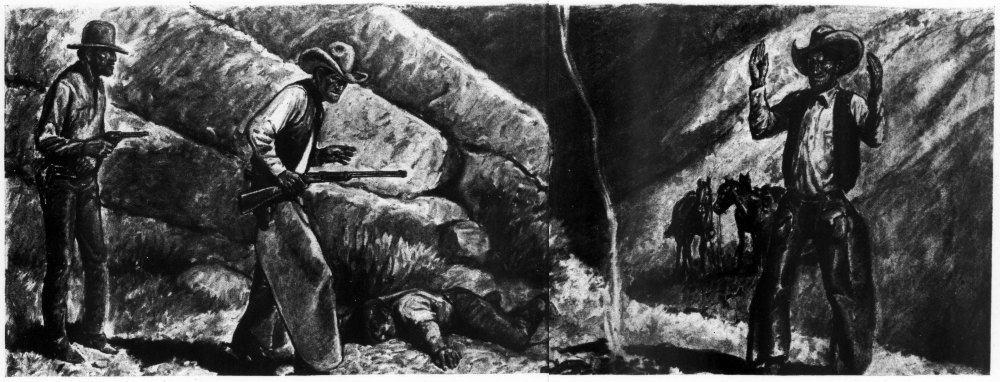
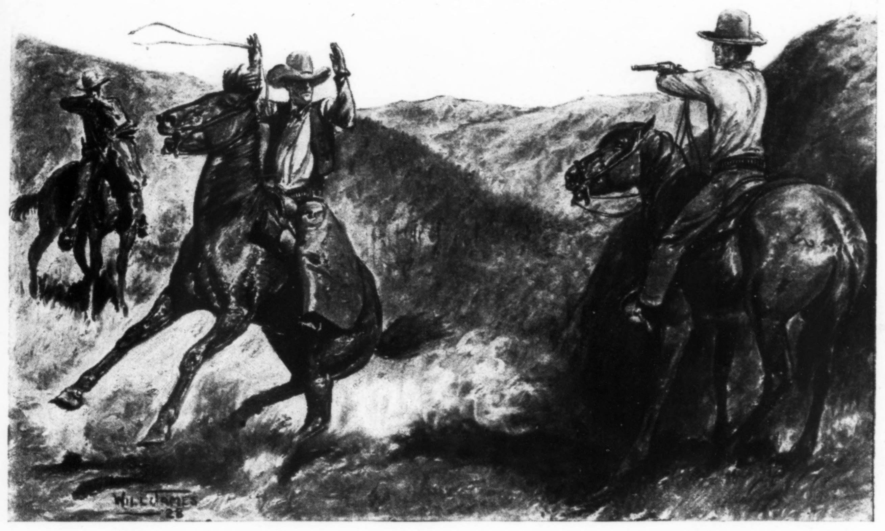
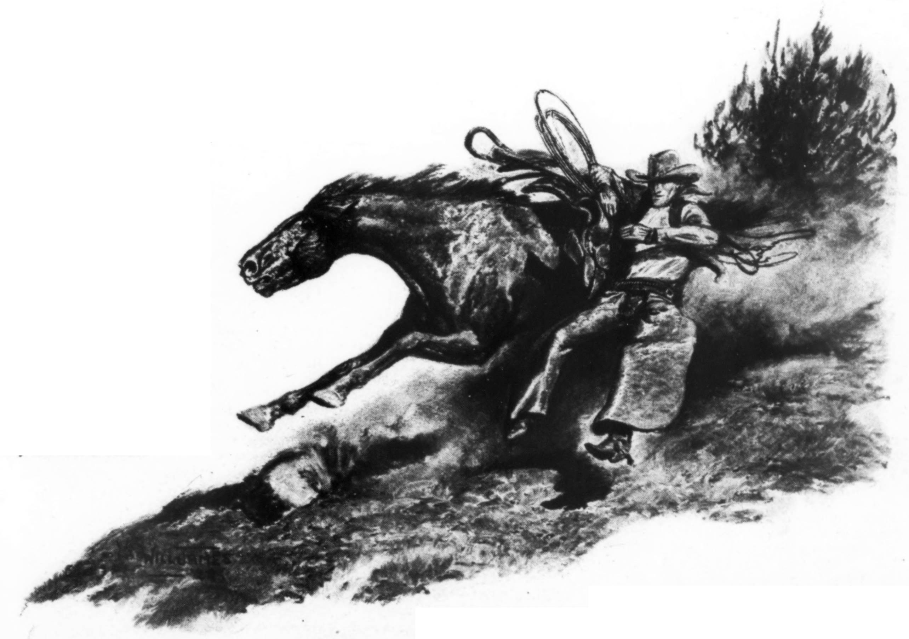

I’d heard a few shots the night before, and I had a hunch they was being exchanged; but as the deer season was open and the town dudes was out for ’em, I just figgered maybe a couple of bucks had made their last jump, and I let it go at that.
The next morning when I went to run in the ponies for a fresh horse to do the day’s riding on, I finds that my big buckskin was missing, my own horse, and one of the best I ever rode. I makes another circle of the pasture and comes to a gate at one corner and stops. On the ground, plain as you wanted to see, was boot-marks where some hombre had got off to open the gate and lead my buckskin through.
I sure knowed my horse’s tracks when I saw ’em, ’cause in shoeing him I’d always take care to round the shoe aplenty so it’d protect the frog when running through the rocks. I’d recognize that round hoof-print anywheres, and I wasn’t apt to forget the spike-heel boot-mark, either.
I remembers the shots I’d heard, and I wonders if my horse missing that way wasn’t on account of somebody being after somebody else and one of ’em needing a fresh horse right bad, just “borrowed” mine.
Well, I thinks he must of needed him worse than I did, and I sure give him credit for knowing a good horse when he sees one, but I wasn’t going to part with my buckskin that easy.
I runs the other horses in the corral and snares me the best one the company had, opens the gate and straddles him on the jump. Out we go, him a-bucking and a-bawling and tearing down the brush. I didn’t get no fun out of his actions that morning—I was in too big a hurry; and when I started to get rough, he lined out like the good horse he was.
I picks up the tracks of the horse-thief out of the fence a ways, gets the lay of where he’d headed and rides on like I was trying to head a bunch of mustangs. About a mile on his trail, I comes across a brown saddle-horse looking like he’d been sat on fast and steady, and says to my own brown as we ride by like a comet: “Looks like that hombre sure did need a fresh horse.”
I’m heading down a draw on a high lope, wondering why that feller in the lead never tried to cover his tracks, when I hear somebody holler, and so close that I figgered they must of heard me coming and laid for me. I had no choice when I was told to hold ’em up, and that I done.

My thirty-thirty was took away from me; then the whole bunch that I reckoned to be a posse, circled around and a couple searched me for a six-gun without luck. “Do you recognize that horse, any of you?” asked the one I took to be the sheriff. “Sure looks like the same one,” answers a few, and one goes further to remark that my build and clothes sure tallies up with the description.
“Where do you come from and where was you headed in such a hurry?” asks the sheriff.
“I’m from the cow-camp on Arrow Springs,” I says, “and I’m headed on the trail of somebody who stole my horse last night.” And riding ahead with half a dozen carbines pointed my way, I shows ’em the trail I was following. “Most likely one of our men,” one of ’em says; and the sheriff backs him with, “Yes, we just let a man go awhile back.”
“The hell you say!” I busts in, getting peeved at being held back that way. “Do you think you house-plants can tell me anything about this track or any other tracks? What’s more,” I goes on, getting red in the face, “I can show you where I started following it, and where whoever stole my horse left his wore-out pony in the place of mine.”
“Now, don’t get rambunctious, young feller. Tracks is no evidence in court nohow, and if I’m lucky enough to get you there without you decorating a limb on the way, that’s all I care. Where was you night before last?” he asks sudden.
“At the camp, cooking a pot of frijoles; and bedded there afterwards,” I answers just as sudden.
“Fine for you so far, but is there anybody up at the camp who can prove you was there?”
“No, I’m there alone and keeping tab on a herd of dry stuff; but if you’ll go to the home ranch, the foreman’ll tell you how he hired me some two weeks back, if that’ll do any good.”
“I’m afraid it won’t,” he says. “That wouldn’t prove anything on your whereabouts the time of the hold-up. Your appearance and your horse are against you; you’re a stranger in these parts, and the evidence points your way; and till your innocence is proved, I’ll have to hold you on the charge of murder along with the robbery of the Torreon County Bank.”
That jarred my thoughts a considerable, and it’s quite a spell before I can round ’em to behave once more. The whole crowd is watching the effect of what the sheriff just said, and I don’t aim to let ’em think I was rattled any. I showed about as much expression as a gambling Chink and finally remarks:
“I reckon you ginks has got to get somebody for whatever’s been pulled off, and it sure wouldn’t look right to go back empty-handed, would it?” I says as I sized up the bunch.
A couple of the men are sent toward my camp to look for evidence, and two others start on the trail I was following, which leaves the sheriff and three men to escort me to town some sixty miles away.
I’m handcuffed; my reins are took away from me and one of the men is leading my horse. We travel along at a good gait, and I’m glad nobody’s saying much; it gives me a chance to think, and right at that time I was making more use out of that think-tank of mine than I thought I’d ever need to. I knowed I couldn’t prove that I was at my camp the night of the hold-up, and me being just a drifting cowboy happening to drop in the country at the wrong time, looked kinda bad for suspicious folks.
After sundown when we strike a fence and finally come to a ranch-house, I was noticing a couple of the men was slopping all over their saddles and getting mighty tired; but I only had feelings for the tired horses that had to pack ’em. One of ’em suggests that they’d better call it a day and stop at the ranch for the night, and we rides in, me feeling worse than a trapped coyote.
I’m gawked at by all hands as we ride up; and I’m not at all pleased when I see one hombre in the family crowd that I do know, ’cause the last time I seen him, I’d caught him blotting the brand on a critter belonging to the company I was riding for and putting his own iron in the place of it. I was always kind of peaceable and kept it to myself, but between him and me, I offered to bet him that if he’d like to try it again I could puncture him and stand off five hundred yards while I was doing it. I’d never seen him since till now.
He gives me a kind of a mean look and I sees he’s pleased to notice that I’m being took in for something. They hadn’t heard of the hold-up as yet, but it wasn’t long till the news was spread.
Between bites of the bait that was laid before us, the sheriff took it onto hisself to tell all about it. I was interested to hear what was said, ’cause the details of the hold-up was news to me too, and what was most serious was that the two masked bandits killed one man, and another wasn’t expected to live; they’d got away with about ten thousand dollars. The women-folks sure kept a long ways from me after that.
The conversation was just about at its worst, for me, when the door opened and in walked a young lady, the prettiest young lady I remember ever seeing. All hands turned their heads her direction as she walked in, and the talk was checked for a spell.
“One of the family,” I figgers as she makes her way to the other lady folks. I hears some low talk and feels accusing fingers pointing my way. In the meantime the sheriff and his men had cleared most everything that was fit to eat off the table; one of the ladies inquires if they’d like more, but none seemed to worry if I had my fill.
I glances where I figger the young lady to be, and instead of getting a scornful glance, as I’d expected, I finds a look in her eyes that’s not at all convinced that I could of done all that was said; and a few minutes later there’s more warm spuds and roast beef hazed over my shoulder, and I knowed the hand that done the hazing was none other than that same young lady’s.
From then on the rest of the talk that was soaring to the rafters about me being so desperate was just like so much wind whistling through the pines. I could see nothing and feel nothing but two brown eyes, pretty and understanding brown eyes.
Arrangements was made for a room upstairs, and as the sheriff took the lead, me and the deputies following, I glanced at the girl once more, and as I went up the stairs I carried with me visions of a pretty face with a hint of a smile.
The three deputies unrolled a round-up bed that was furnished, and jumped in together; the sheriff and me took possession of a fancier bed with iron bedsteads. My wrist was handcuffed to his and we made ourselves comfortable as much as we could under the circumstances.
A lot of trouble was made, before the lamp was blowed out, to show there was no use me trying to get away.
In turning over, my fingers come acrost a little mohair rope I used for belt and emergency “piggin’ string” (rope to tie down cattle). It was about six feet long, and soft.
The three deputies, after being in the cold all day and coming in a warm house tired and getting away with all that was on the table, was plumb helpless, and they soon slept and near raised the roof with the snoring they done.
The sheriff, having more responsibility, was kind of restless, but after what seemed a couple of hours he was also breathing like he never was going to wake up, leaving me a-thinking, and a-thinking.
The girl’s face was in my mind through all what I thought; and the hint of her smile was like a spur a-driving me to prove that she was right in the stand she’d took. There was three reasons why I should get away and try to get the guilty parties; one was to get my good old buckskin back; another was to clear myself; but the main one, even though I didn’t realize it sudden, was the girl.
If the guilty parties wasn’t found, I knowed I’d most likely take the place of one of ’em. I just had to clear myself somehow, and the only way was to break loose to do it.
I was still fingering the piggin’ string at my belt. I couldn’t see the window and concludes it must be pitch-dark outside. A coyote howled, and the dogs barked an answer.
“Wonder if I can make it?” And something inside tells me that I’d better make it, and now, or I’d never have another chance.
The sheriff acts kinda fidgety as I try to ease my piggin’ string under his neck. I lays quiet awhile and tries it again, and about that time he turns over just right and lays over that string as though I’d asked him to. His turning over that way scared me, so that I didn’t dare move for a spell; but finally I reach over and grab the end of the string that was sticking out on the other side, makes a slip knot and puts the other end of the string around a steel rod of the bedstead; and still hanging on to that end, I’m ready for action.
From then on, I don’t keep things waiting. With my handcuffed arm, I gets a short hold on the string; and with my free arm, I gets a lock on the sheriff’s other arm all at once. That sure wakes him up, but he can’t holler or budge, and the more he pulls with the arm that’s handcuffed to mine, the more that string around his neck is choking him. I whispers in his ear to tell me where I can get the keys for the handcuffs before I hang him to dry, and by listening close I hears: “In my money belt.”
I had to let go of his arm to get that key, but before he had time to do anything, my fist connected with the point of his chin in a way that sure left him limp. I takes the handcuffs off my wrist, turns the sheriff over on his stomach and relocks the handcuffs with his arms back of him, stuffs a piece of blanket in his mouth, and cutting the piggin’ string in two, ties the muffler in place and uses the other piece to anchor his feet together.
The three deputies on the floor was still snoring away and plumb innocent of what was going on. I sneaks over to where I’d seen ’em lay my rifle, picks out an extra six-shooter out of the holster of one of the sleeping men and heads to where I thought the window to be.
It was locked from the inside with a stick, and removing that, I raised it easy; and still easier I starts sliding out of the window and down as far as my arms lets me and lets go.
I picks myself up in a bunch of dry weeds and heads for the corrals for anything I could find to ride. I’m making record time on the way and pretty near bumps into—somebody.
My borrowed six-shooter is pointed right at that somebody sort of natural, and before I can think—
“Don’t shoot, cowboy,” says a soft voice. “I knowed you’d come, and I been waiting for you. I got the best horse in the country saddled and ready, and if you can ride him, nothing can catch you.”
I recognized the young lady; she came closer as she spoke and touched my arm.
“Follow me,” she says, pulling on my shirt-sleeve, and the tinkle of her spurs and the swish of her riding-skirt sounded like so much mighty fine music as I trotted along.
But there was sounds of a commotion at the house. Either the weeds had give me away or the sheriff come out of it. Anyway, a couple of lights was running through the house, doors was slamming, and pretty soon somebody fires a shot.
“Them folks sure have learnt to miss me quick,” I remarks as we push open the corral gate. Then I’m up to the snorting pony in two jumps. I see he’s hobbled and tied ready to fork; and sticking my rifle through the rosadero, I takes the hobbles off of him, lets him break away with me a-hanging to his side and I mounts him flat-footed as he goes through the gate.
I was making a double get-away, one from the sheriff and the other from the girl. I knowed, the way I felt, it would have seemed mighty insulting for me to try and thank her with little words. I wanted to let her know somehow that if she ever wished to see me break my neck, I’d do it for her, and with a smile.
“I sure thank you,” I says as I passes her (which goes to prove that there’s times when a feller often says things he wants to say least), but I had to say something.
The whole outfit was coming from the house. There was a couple more shots fired, and with the noise of the shots, my old pony forgot to take time to buck and lined out like a scared rabbit, me a-helping him all I could. We hit a barb-wire fence and went through it like them wires was threads and went down the draw, over washouts and across creeks like it was all level country.
The old pony was stampeding, and it was the first time in my life that I wanted a ride of that kind to last, and being that we was going the direction I wanted to go, I couldn’t get there any too fast to suit me.
I’m quite a few miles away from the ranch when I decides I’d better pull up my horse if I wanted to keep him under me after daybreak, and that I did, but I managed to keep him at a stiff trot till a good twenty-five miles was between us and where we’d left.
Daybreak catches up with us a few miles farther on, and I figgers I’d better stop awhile to let the pony feed and water. I takes a look over the way I just come, and being that I’m halfways up a mountain, I gets a good view of the valley, and if anybody is on my trail, I’d sure get to see ’em first and at a good ten miles away.
The little old pony buckles up and tries to kick me as I gets off, and not satisfied with that, takes a run on the hackamore rope and tries to jerk away, but his kind of horseflesh was nothing new to me, and in a short while he was behaving and eating as though he knowed it was the best thing for him to do.
A good horse always did interest me, and as I’m off a ways studying his eleven hundred pounds’ worth of good points, I notices a sackful of something tied on the back of the saddle. “Wonder what it can be,” I thinks out loud as I eases up to the horse and unties it. I opens the sack, and finds all that’s necessary to the staff of life when traveling light and fast the way I was. There was “jerky” and rice, salt and coffee, with a big tin plate and cup throwed in to cook and eat it out of.
“Daggone her little hide!” I says, grinning and a-trying to appreciate the girl’s thoughtfulness. “Who’d ever thought it?”
I cooked me a bait in no time, and getting around on the outside of it, am able to appreciate life, freedom and a good horse once again. And wanting to keep all that, I don’t forget that these hills are full of posse-men, and that the other bunch at the ranch would soon be showing themselves on my trail. There was what I took to be a small whirlwind down on the flat. If it was a dust made by the posse they’d sure made good time considering the short stretch of daylight they’d had to do any tracking by.
I takes another peek out on the flat before cinching up, and sure enough there was little dark objects bobbing up and down under that dust.
I had the lead on ’em by ten miles, and I knowed if I could get on my horse and was able to stick him, that I’d soon lose ’em; but doing that away from the corral sure struck me as a two-man’s job. What I was afraid of most was him getting away from me; his neck was as hard to bend as a pine tree, and his jaw was like iron, but I had to get action, and mighty quick, ’cause the distance between me and them was getting shorter every minute.
It helped a lot that I’d hobbled him before he was rested up from the ride I’d give him that night, and taking the rope off the saddle, I passes one end of it through the hobble and tied it. About then the old pony lets out a snort and he passes me like a blue streak. I just has time to straighten up, give a flip to the rope that was running through my hands, follow it a couple of jumps and get set.
My heels was buried out of sight when the stampeding pony hits the end and the rope tightens up; he made a big jump in the air and as his front feet are jerked out from under him, he lands in a heap and makes the old saddle pop. I follows the rope up to him, keeping it tight so’s he can’t get his feet back under him, and before he knows it I’ve got him tied down solid.
I takes a needed long breath and looks out on the flat once more; there’s no time to waste that I can see; them little dark objects of awhile ago had growed a heap bigger and was a-bobbing up and down faster than ever. I straightens up my stirrups, gets as much of the saddle under me as I can, and twists the pony’s head so’s to hold him down till I’m ready to let him up, and starts to take the rope off his feet.
He knows it the minute he’s free and is up like a shot; he keeps on getting up till I can near see the angels, and when he hit the earth again he lit a-running—and straight toward the posse and the ranch.
I tries to haze and turn him with my hat, but he’d just duck out from under it and go on the same way. So far he didn’t act as though he wanted to take the time to buck with me, and I’d been glad of it, but now, we just had to come to a turning-point and the only way I seen was to scratch it out of him.
Screwing down on my saddle as tight as I could, I brings one of my ten-point “hooks” right up along his neck far as I could reach and drags it back. That sure stirred up the dynamite in him of a sudden, and I had a feeling that the cantle of my saddle was a fast mail-train and I was on the track; but he turned, and as luck would have it I was still with him. He kept on a-turning and all mixed in with his sunfishing and side-winding sure made it a puzzle to tell which was heads or tails.
What worried me most was the fear of being set afoot, and I’d been putting up a safe ride on that account, but that old pony wasn’t giving me a fair deal. He fought his head too much, and I was getting tired of his fooling. I reaches down, gets a shorter holt on the hackamore rope and lets him have it, both rowels a-working steady—and two wildcats tied by the tail and throwed across the saddle couldn’t of done any more harm.
We sure made a dust of our own out there on the side of that mountain, and I’d enjoyed the fight more if things had of been normal, but they wasn’t, and I had the most to lose. The little horse finally realized that, the way I went at him, ’cause pretty soon his bucking got down to crow-hopping and gradually settled down to a long run up the slope of the mountain. That young lady was sure right when she said that if I could ride him, nothing could catch me.
He was pretty well winded when we got to the top, but I could see he was a long ways from tired, and letting him jog along easy we started down into a deep cañon.
My mind is set on tracking down the feller what stole my buckskin horse, and I figgers the way I’m heading I’ll sometime come across his trail, but I’d like mighty well to shake loose from that bunch chasing me before I get much farther; and thinking strong on that, I spots a bunch of mustangs a mile or so to my left, and there was my chance to leave a mighty confusing trail for them that was following.
I sneaks up out of sight and above the “fuzztails,” and when I am a few hundred yards off, I shows up sudden over a ridge and heads their way. I lets out a full-grown war-whoop as I rides down on ’em, and it sure don’t take the wild ones long to make distance from that spot.
My horse being barefooted and his hoofs wore smooth, his tracks blend in natural with that of the mustangs, and I keeps him right in the thick of ’em. The wild ones make a half-circle which takes me out of my way some, but I’m satisfied to follow, seeing that it also takes me on the outskirts of where I figgered some of the posse outfit might be.
My horse was ganting up and getting tired, but them wild ponies ahead kept him wanting to catch up; and me holding him down to a steady longlope made him all the more anxious to get there with ’em. I was wishing I could stop to let him feed and rest awhile, but I didn’t dare to just yet; my trail wasn’t covered up well enough.
The sun is still an hour high when the wild ones I was following came out of the junipers and lined out across a little valley. I figgers I’m a good seventy-five miles from where I made my get-away, and even though my horse hates to have the mustangs leave him behind, he’s finally willing to slow down to a walk. I rubs his sweaty neck and tells him what a good horse he is, and for the first time I notice his ears are in a slant that don’t show meanness.
The wild ones run ahead and plumb out of sight; the sun had gone over the hill, and it was getting dark, and on the back trail I don’t see no sign of any posse. Still following the trail the mustangs had left, I begins to look for a place where I can branch off, and coming across a good-sized creek I turns my horse up it into the mountains.
“Old pony,” I says to my horse as we’re going along in the middle of the stream, “if that posse is within twenty miles of us, they’re sure well mounted; and what’s more,” I goes on, “if they can tell our tracks from all the fresh tracks we’ve left scattered through the country behind, in front and all directions, why, they can do a heap more than any human I know of.”
I’m a couple of miles up the mountain and still following the stream, when a good grassy spot decides me to make camp. The little horse only flinches as I get off this time, and he don’t offer to jerk away. I pulls the saddle off, washes his back with cool water and hobbles him on the tall grass, where he acts plumb contented to stay and feed.
Clouds are piling up over the mountain; it’s getting cold and feels like winter coming on. I builds me a small Injun fire, cooks me up a bait, and rolling a smoke, stretches out.
“Some girl,” I caught myself saying as I throwed my dead cigarette away.... The little horse rolled out a snort the same as to say, “All is well,” and pretty soon I’m not of the world no more.
It’s daylight when a daggone magpie hollers out and makes me set up, and I wonders as I stirs up the coffee what’s on the program for today. My horse acts real docile as I saddles him up; he remembers when I gives his neck a rub that it pays to be good.
I crosses on one side of a mountain pass and on over a couple of ridges and down into another valley of white sage and hardpan. I don’t feel it safe to come out in the open and cross that valley, so I keeps to the edge close to the foothills and junipers.
My horse, picking his way on the rocky trail, jars a boulder loose and starts it down to another bigger boulder that’s just waiting for that much of an excuse to start rolling down to the bottom of the cañon; a good many more joins in, and a noise echoes up that can be heard a long ways.
As the noise of the slide dies down, I hears a horse nicker, and it sounds not over five hundred yards away. I didn’t give my horse a chance to answer, and a hunch makes me spur up out of the cañon and over the ridge. I was afraid of the dust I’d made in getting over the ridge.
I’m splitting the breeze down a draw; and looking back over my shoulder, I’m just in time to get the surprise of my life. A whole string of riders are topping the ridge I’d just went over, and here they come heading down on me hell-bent for election. I know it’s them, and I know they seen my dust; and worse yet, I know they’re on fresh horses.
“Now,” I asks the scenery, “how in Sam Hill do you reckon for them to be in this perticular country, and so quick?” And the only answer I could make out was that when I struck the mustangs and put too many tracks in front of ’em for ’em to follow, they just trusted to luck and cut acrost to where they thought I’d be heading.
My only way out is speed, and my pony is giving me all he can of that; but it’s beginning to tell on him, and I don’t like the way he hits the other side of the washouts we come across.
A bullet creases the bark off a piñon not far to my right; another raises the dust closer, and even though I sure hated to, I had to start using the spurs. The little horse does his final best, and I begins to notice that the bullets are falling short, and it ain’t long when I’m out of range of ’em.
“Old-timer,” I says to my tired horse as we’re drifting along, “if you only had a few hours’ rest, we’d sure make them hombres back of us wonder how thin air could swallow us so quick.”
We tops a rise in the foothills, and ahead of us is a bunch of mustangs. They evaporate quick, leaving a big cloud of dust. They can’t do me any good this time; my horse is too far gone; but I thinks of another way and proceeds to act.
I reaches over, takes the hackamore off my horse’s head and begins to loosen the latigo. My pony’d took heart to keep up the speed awhile longer, on account of them wild ones ahead and wanted to catch up with ’em.
My saddle cinch is loose and a-flapping to one side; my chance comes as we go through a thick patch of buckbrush, and I takes advantage of it. I slides off my horse and takes my saddle with me; the old pony has nothing on him but the sweat where my saddle’d been. There’s mustangs ahead, and with a snort and a shake of his tail he bids me good-by and disappears.

About that time me and my “riggin’” ain’t to be seen no more, and when the posse rides by on the trail my horse’d left, there was a big granite boulder and plenty of buckbrush to keep me hid, and looking straight ahead for a dust, the sheriff and his three men kept right on a-going.
But I figgered they’d be back, sometime, and thinks I’d better be a-moving. I hangs my saddle up a piñon tree, leaves most of the grub with it, and, tearing up the gunnysack that was around it, proceeds to pad up my feet so they’d leave as little track as possible. Then I picks up my rifle and heads up towards a high point on the mountain where I could get the lay of the country.
I’m on what seems to be a high rocky ledge, and looking around for some shelter in it from the cold wind, and where I can hole up for the night, I comes to the edge of nothing—and stops short!
Another step, and I’d went down about three hundred feet; a fire at the bottom of it showed me how deep it was, and by that fire was two men; maybe they’re deerhunters, I thinks. I keeps a-sizing up the outfit, and then I spots three hobbled ponies feeding to one side a ways, and there amongst ’em was my good old buckskin. I’d recognize his two white front feet and his bald face anywheres.
I’m doing some tall figgering by then, and I has a hunch that before daybreak I’ll be well mounted again and on my own horse. Seeing that my rifle was in good working order, I slides down off my perch to where going down is easier and surer of a foothold. I’m down about halfways, and peeking through a buckbrush, I gets a better look at them two hombres by the fire. The more I size ’em up, the surer I gets of my suspicions.
I’m close enough to see that one of the men is about my build, and not only that, but it looks like he had on my clothes. The other man I couldn’t make much out of—he was laying down on his face as though he was asleep; but I could see he was some stouter and shorter.
Well, all appearances looked a safe bet to me, and beating my own shadow for being noiseless, I gets to within a hundred feet of ’em.
“Stick ’em up,” I says quiet and steady for fear of their nerves being on edge and stampeding with ’em. One of ’em flinches some but finally reaches for the sky, the other that’s laying down don’t move, and I warns him that playing ’possum don’t go with me; but threatening didn’t do no good there. I’m told that he’s wounded and out of his head—I remember the sheriff saying that one of the men had been wounded, which altogether tallied up fine as these being the men me and the sheriff wanted.
“Take his hands away from his belt and stretch ’em out where I can see ’em then,” I says, not wanting to take the chance. That done, I walks over toward ’em and stops, keeping the fire between. I notice that the man laying has no gun on or near him; the other feller with his arms still up is packing two of ’em, and I makes him shed them by telling him to unbuckle his cartridge-belt.
I backs him off at the point of my rifle and goes to reaching for the dropped belt and six-guns, when from behind and too close for comfort somebody sings out for me to drop my rifle and reach for the clouds. I does that plenty quick, and looking straight ahead like I’m told to, I sees a grin spreading all over the face of the man I’d just held up a minute ago.
“Where does this third party come in?” thinks I. My six-shooter is jerked out of my belt as I try to figger a way out, and is throwed out of reach along with my rifle; and then of a sudden the light of the fire in front of me was snuffed out, and with a sinking feeling all went dark....
When I come to again, I hear somebody groaning, and I tries to get my think-tank working; my head feels about the size of a wash-tub, and sore. Whatever that hombre hit me with sure wasn’t no feather pillow. I tries to raise a hand and finds they’re both tied; so is my feet, and about all I can move is my eyelashes. Things come back to me gradual, and star-gazing at the sky I notice it’s getting daybreak.
Hearing another groan, I manages to turn my head enough to see the same hombre that’d been laying there that night and in the same position. I hears the other two talking, off a ways. It sounds by the squeak of saddle-leather that they’re getting ready to move, and that sure wakes me up to action.
I know I can’t afford to let ’em get away, and I sure won’t. Raising up far as I can, I hollers for one of ’em to come over a minute. There’s some cussing heard, but soon enough here comes the tallest one, and he don’t no more than come near me when I asks him to give me a chance to loosen up my right boot, that my sprained ankle was bothering me terrible.
“You needn’t think you can pull anything over on me,” he says sarcastic. He sizes my boot up awhile and then remarks: “But I’ll let you pull ’em both off. I need a new pair.”
My arms and feet are free, but awful stiff; he’s standing off a few feet, and with rifle ready for action is watching me like a hawk while I’m fidgeting around with my right boot; I gets my right hand inside of it as though to feel my ankle, but what I was feeling for mostly was a gun I’d strapped in there.
(When I started out on the trail of my buckskin I figgered on getting him; I also figgered on running acrost somebody riding him that’d be a gunman, and I’d prepared to compete with all the tricks of the gun-toter. This gun in my boot was what I called my hole card.)
My foot is up and toward him, and I’m putting on a lot of acting while getting hold of the handle and pulling back the hammer, but I manages that easy enough and squeezing my finger towards the trigger, I pulls.
That shot paralyzed him, and down he come. He’d no more than hit the ground when I falls on the rifle he’d dropped, and I starts pumping lead the direction of the other feller. His left arm was bandaged and tied up, but he was sure using his right so that our shots was passing one another halfways and regular.... Then I felt a pain in my left shoulder. I begins to get groggy—and pretty soon all is quiet once more.
I must of been disconnected from my thoughts for quite a spell, ’cause when I come to, this time the sun is way high. I straightens up to look around and recollect things, and it all came back some as I gets a glimpse of my buckskin feeding off a ways.
My shoulder’s stiff and sore, but feeling around for the harm the bullet has done, I finds I’d just been creased, and being weak on account of not having anything under my belt either in the line of grub or moisture for the last twenty-four hours, that bullet was enough to knock me out.
I’m hankering for a drink right bad and starts looking for it on all fours, when in my rambling, I comes across a shadow, and looking right hard I can make out horse’s hoofs, then his legs and on up to a party sitting on top of him and looking down at me. The warm sun had made me weak again, and I quits right there.
Somebody’s pouring cool water down me, and when I opens my eyes again, I feels better control of ’em. I’m asked when I et last and I can’t seem to remember; then I gets a vision of a pot of coffee, and flapjacks, smells frying bacon, and the dream that I’m eating evaporates with the last bite.
“Well, I see you found your buckskin,” says a voice right close, and recognizing that voice makes me take notice of things. It was the sheriff’s; the posse’d rode in on me.
“And by the signs around here,” the same voice goes on, “it looks like you just got here in time and had to do a heap of shooting in order to get him, but I’m sure glad to see you did, ’cause along with that horse you got the two men we wanted for the robbery, which makes you free to go. No mistake this time.”
That last remark brought real life to me, and interested again, I takes a look around. The two men was setting against a rock looking mighty weak and shot up. I looks for the third, and I’m told that he was being took in to the nearest ranch for care he was needing mighty bad.
“How does he come to be with these hombres?” I asks.
“He’s a Government service man out after these two outlaws,” says the sheriff, “and your dropping in when you did is all that saved him—if we hadn’t heard your shot, we’d never found this hole, and he’d been left to feed the buzzards.”
“Not wanting to hog all the credit,” I says, “I’ve sure got to hand it to you too—for camping on a feller’s trail the way you do; it wasn’t at all comfortable.”
“Neither is a piggin’ string around a feller’s neck,” comes back the sheriff, smiling.
It’s after sundown as I tops a ridge and stops my buckskin. Out across a big sage and hardpan flat is a dust stirred up by the posse and their prisoners. I watches it a spell, and starting down the other side of the ridge, I remarks: “Buck, old horse, I’m glad you and me are naturally peaceable, ’cause being that way not only saves us from a lot of hard traveling, but it’s a heap easier on a feller’s think-tank.”
The evening star looks near as big as the moon as I glances up to keep my bearings straight; I finds myself gazing at it, and then comes a time when my vision is plumb past it, a vision of two brown eyes and a hint of a smile.
Then the buckskin shook himself and at the same time shook me back to realizing that I was on a horse.
“Some day soon we’re going visiting, Buck,” I says, coming to; and untangling the knots out of my pony’s mane as I rides, I heads him up the trail back to the cow-camp on Arrow Springs.
Transcriber’s Note: This story appeared in the January 1930 issue of Redbook Magazine.